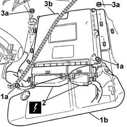

1058A80 CNG INJECTION UNIT CONTROL UNIT - R R
- Path
- Procedures > 10 ENGINE UNIT > 1058 GAS CIRCUIT > 1058A GAS CIRCUIT MULTI POINT INJECTION > 1058A80 CNG INJECTION UNIT CONTROL UNIT - R R
- Kind
- repair procedure (removal / refitting; the operation number is the code)
- Applies to
- engines: 1.6 16v; all production periods; only with equipment: BIPOWER and BLUPOWER
- Interactive page
- https://sloeber94.github.io/elrnDB-fMltpl/en/#/2891486
Applies to: engines: 1.6 16v; production: fino a 05/04; only with equipment: BIPOWER and BLUPOWER
Applies to: engines: 1.6 16v; production: da 06/04; only with equipment: BIPOWER
 Removing
Removing
 Refitting
Refitting- Disconnect the negative battery terminal.
1. Working at the bottom of the dashboard, passenger side, undo the nuts (1a) and remove the methane control unit cover (1b).
2. Disconnect the electrical connectors for the methane control unit.
Description | Connector |
|---|---|
Methane injection control unit | M19A |
Description | Connector |
|---|---|
Methane injection control unit |
3. Undo the nuts (3a) and remove the methane injection control unit (3b) from the mounting bracket.

Applies to: engines: 1.6 16v; production: da 06/04; only with equipment: BIPOWER
Refitting
Removing- Position the methane injection control unit.
- Fasten the control unit to the mounting bracket using the fixing nuts.
- Connect the electrical connections to the methane injection control unit.
- Position the methane control unit cover and secure it using the fixing nuts.
- Connect the negative battery terminal.